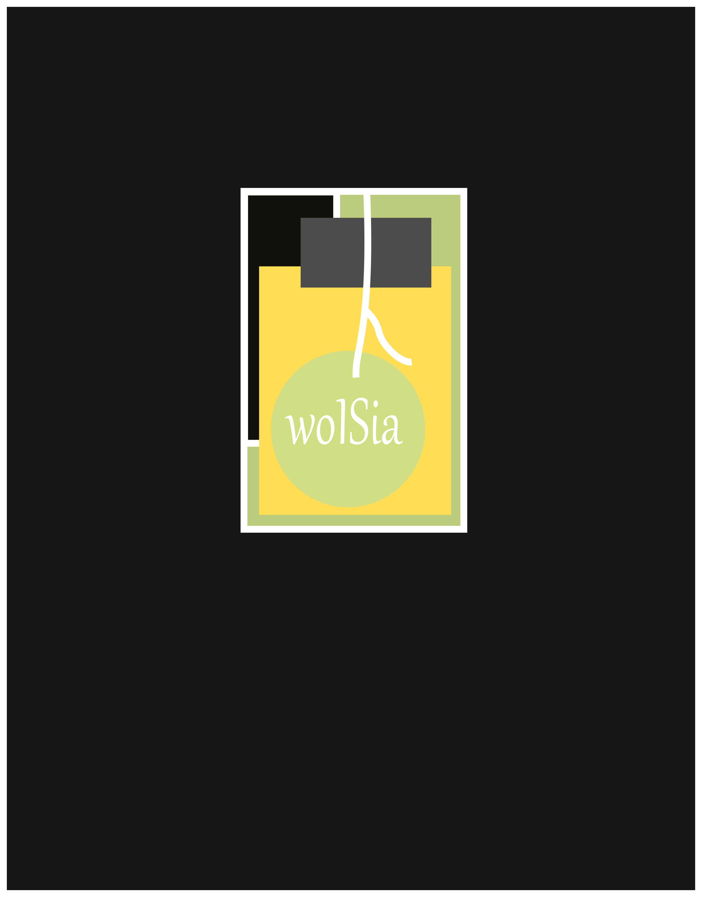
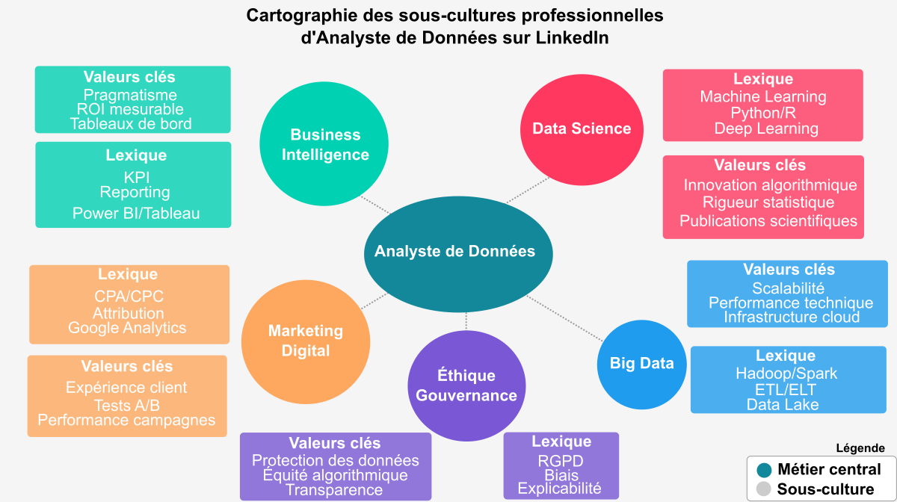
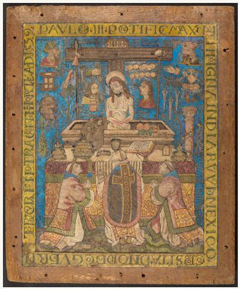

Newsletter Portfolio
03/04/2025
Découvrez mes derniers projets et réalisations dans cette newsletter hebdomadaire.
Récits visuels, horizons numériques :
Chaque newsletter, un voyage entre données, créativité et découvertes

approche-integree-creation

archeologie-numerique

archaedyn-article-md

approche-analyse-donnees
data-visualisation

messe-saint-gregoire
approche-integree-creation
Une Approche Intégrée de Création de Contenus
Image Représentative

Concept Fondamental
Une démarche de création qui transcende les frontières traditionnelles entre différents médias et disciplines.
Principes Directeurs
Synergie Multidisciplinaire
- Fusion de différentes disciplines
- Création de contenus riches et cohérents
- Décloisonnement des approches créatives
Dimensions de l'Intégration
1. Convergence des Médias
- Combinaison de :
- Texte
- Image
- Vidéo
- Modèles 3D
- Design interactif
2. Approche Holistique
- Chaque média enrichit les autres
- Création d'expériences immersives
- Narration transmédia
Stratégies de Création
Interdisciplinarité
- Croisement des compétences
- Dialogue entre différents domaines
- Innovation par la diversité
Processus Créatif
- Conceptualisation
- Exploration multisensorielle
- Intégration des perspectives
- Raffinement itératif
Compétences Mobilisées
Techniques
- Design graphique
- Développement web
- Photographie
- Modélisation 3D
- Traitement multimédia
Créatives
- Storytelling
- Narration visuelle
- Design thinking
- Communication transmedia
Exemples de Projets
- wolSia (projet IA et data-driven)
- Trésor d'Eauze (patrimoine numérique)
- Séries photographiques
- Projets de médiation culturelle
Philosophie de Création
"La créativité naît à l'intersection des disciplines, là où les frontières deviennent floues et les possibilités infinies."
Impact et Vision
- Création de contenus innovants
- Expériences utilisateur immersives
- Narration riche et multidimensionnelle
- Dépassement des approches traditionnelles
Outils et Technologies
- Suite Adobe
- Outils de modélisation 3D
- Plateformes de développement web
- Logiciels de traitement multimédia
Conclusion
Une approche qui transforme la création de contenus en un écosystème dynamique et interconnecté.
Retour en hautarcheologie-numerique
Archéologie Numérique : Dynamiques Territoriales
Présentation du Projet
Un projet innovant qui transforme des données archéologiques en récit dynamique, illustrant comment le data storytelling peut révéler des insights historiques complexes.
Méthodologie
- Analyse de données géospatiales historiques
- Cartographie interactive des dynamiques territoriales
- Narration contextuelle basée sur des données
Technologies Utilisées
- Data Storytelling
- Recherche Historique
- Visualisation de Données
Capture d'Écran

Lien du Projet
Découvrir le Projet Archéologie Numérique
Description Détaillée
Ce projet démontre comment les données historiques peuvent être transformées en récits visuels et interactifs, offrant une nouvelle perspective sur l'évolution des territoires à travers les siècles.
Compétences Mises en Œuvre
- Analyse de données spatiales
- Cartographie historique
- Storytelling data-driven
- Visualisation de données complexes
archaedyn-article-md
ARCHAEDYN : 7 millénaires de dynamiques territoriales
Contexte du Projet
Le projet ARCHAEDYN s'inscrit dans une recherche ambitieuse visant à comprendre les dynamiques territoriales sur une période de 7 millénaires, du Néolithique au Moyen Âge. Cette étude innovante propose une analyse approfondie des modèles d'établissement, de production et d'échanges commerciaux.
Objectifs Scientifiques
Les principaux objectifs du projet étaient de :
- Cartographier l'évolution des implantations humaines
- Analyser les systèmes de production
- Comprendre les réseaux d'échanges commerciaux
- Étudier les dynamiques territoriales sur le long terme
Méthodologie
La recherche a combiné plusieurs approches méthodologiques :
- Analyse cartographique détaillée
- Études archéologiques comparatives
- Modélisation des données spatiales
- Utilisation de systèmes d'information géographique (SIG)
Résultats Principaux
Les résultats ont mis en lumière :
- L'évolution complexe des établissements humains
- Les transformations des systèmes de production
- Les réseaux d'échanges et leurs mutations
- Les dynamiques territoriales sur 7 millénaires
Signification
ARCHAEDYN représente une avancée significative dans la compréhension des dynamiques territoriales, offrant une perspective unique sur l'évolution des sociétés humaines à travers une période historique longue.
Source originale : Hypothèses - ARCHAEDYN
Conférence finale : Dijon, 23-25 juin 2008
Retour en hautapproche-analyse-donnees
Une Approche de l'Analyse de Données
Transformation des Données Brutes en Récits Intelligibles
Image Représentative

Philosophie Fondamentale
Transformer les données brutes en récits stratégiques, révélant les insights cachés derrière les chiffres.
Méthodologie Intégrée
1. Collecte & Préparation
Étapes Cruciales
- Nettoyage méticuleux des données
- Structuration des jeux de données
- Préparation pour l'analyse approfondie
Techniques
- Gestion des valeurs manquantes
- Normalisation
- Prétraitement avancé
2. Analyse Statistique
Approche Comprehensive
- Méthodes statistiques avancées
- Extraction de tendances significatives
- Analyse multidimensionnelle
Outils et Technologies
- Python (Pandas, NumPy)
- R (Tidyverse)
- Techniques de machine learning
- Analyses prédictives
3. Visualisation
Art de la Représentation
- Création de représentations visuelles éloquentes
- Transformation des données complexes
- Design d'information intuitif
Compétences
- Datavisualisation
- Design UX
- Narration visuelle
- Communication graphique
4. Narration Stratégique
Contextualisation des Insights
- Transformation des données en récits
- Mise en perspective stratégique
- Création de sens
Dimensions
- Contexte organisationnel
- Dynamiques culturelles
- Implications stratégiques
Processus d'Analyse Approfondie
Lecture des Contextes
- Écouter les récits des données
- Comprendre les nuances
- Identifier les implications cachées
Tissage des Narratifs
- Au-delà des chiffres
- Connexion avec les expériences humaines
- Exploration des dynamiques organisationnelles
Interprétation Contextuelle
- Situation des données dans leur écosystème
- Perspective professionnelle
- Dimension culturelle
- Contexte historique
Compétences Clés
- Analyse statistique avancée
- Programmation
- Visualisation de données
- Communication stratégique
- Pensée critique
Impact et Résultats
- Insights stratégiques
- Aide à la décision
- Compréhension approfondie
- Transformation organisationnelle
Citation Inspirante
"Les données sont des miroirs qui reflètent les histoires invisibles de nos organisations et sociétés."
Conclusion
Une approche qui fait plus que analyser : elle raconte, révèle et inspire.
Retour en hautdata-visualisation
Data & Visualisation
Exploration et Analyse de Données
Image de Référence
Approche Analytique
Une méthodologie qui va au-delà de la simple manipulation de chiffres, transformant les données brutes en récits intelligibles et stratégiques.
Méthodologie Intégrée
- Collecte & Préparation
- Nettoyage des données
- Structuration des jeux de données
-
Exploration approfondie
-
Analyse Statistique
- Utilisation de méthodes avancées
- Extraction de tendances significatives
-
Analyse contextuelle
-
Visualisation
- Création de représentations visuelles éloquentes
- Conception de dashboards intuitifs
-
Traduction des insights complexes
-
Narration
- Contextualisation des données
- Création de récits compréhensibles
- Mise en perspective stratégique
Processus d'Analyse
1. Lecture des Contextes
Chaque ensemble de données raconte une histoire. L'approche consiste à : - Écouter les récits sous-jacents - Comprendre les nuances - Identifier les implications culturelles
2. Tissage des Narratifs
Au-delà des chiffres, recherche des connexions entre : - Données - Expériences humaines - Dynamiques organisationnelles - Évolutions sociétales
3. Interprétation Contextuelle
Chaque donnée est située dans son écosystème : - Professionnel - Culturel - Historique
Compétences Techniques
- Python (Pandas, NumPy, Scikit-learn)
- R (Tidyverse, ggplot2)
- SQL & Bases de données
- Machine Learning
- NLP
- Visualisation de données complexes
- Power BI & Tableau
Outils et Frameworks
- Analyse statistique avancée
- Algorithmes de machine learning
- Traitement du langage naturel
- Création de dashboards interactifs
- Visualisation de données complexes
Applications Pratiques
- Optimisation des réseaux de transport
- Suivi pédagogique
- Analyse de systèmes documentaires
- Exploration de données historiques
Philosophie de la Data Science
Transformer des données brutes en insights stratégiques, racontant des histoires cachées derrière les chiffres.
Retour en hautmesse-saint-gregoire
Patrimoine Numérique : La Messe Saint Grégoire
Présentation du Projet
Un projet de valorisation du patrimoine culturel associant photographie, rédaction de contenus historiques et conception d'expériences interactives pour rendre accessibles des trésors culturels.
Objectifs
- Préservation et médiation culturelle
- Création de ponts entre tradition et innovation
- Exploration numérique du patrimoine historique
Technologies Utilisées
- Recherche Historique
- Médiation Culturelle
Capture d'Écran

Lien du Projet
Consulter La Messe Saint Grégoire
Description Détaillée
Cette initiative démontre comment les technologies numériques peuvent servir la préservation et la médiation culturelle, en transformant un élément patrimonial en une expérience interactive et accessible.
Approche
- Documentation visuelle approfondie
- Contextualisation historique
- Création d'une expérience numérique immersive
Compétences Mises en Œuvre
- Photographie documentaire
- Recherche historique
- Conception d'expériences interactives
- Médiation culturelle numérique